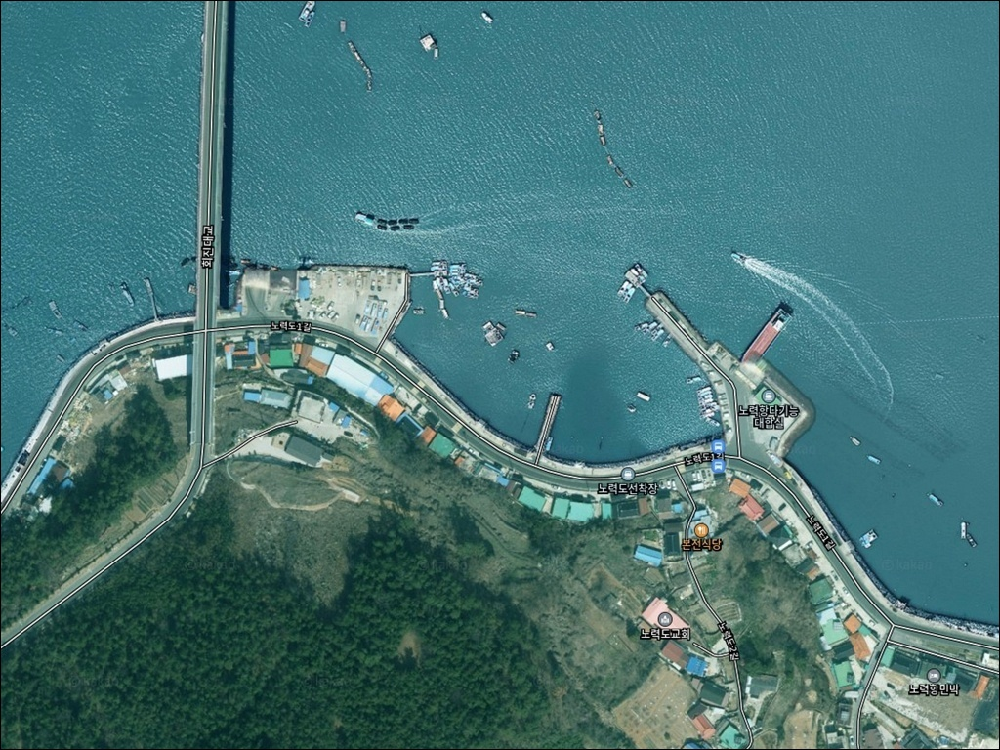
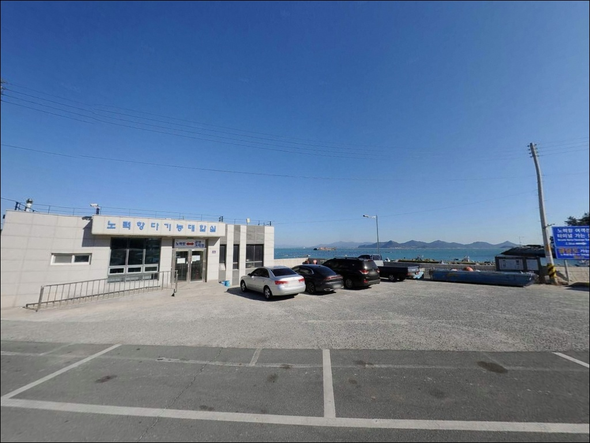
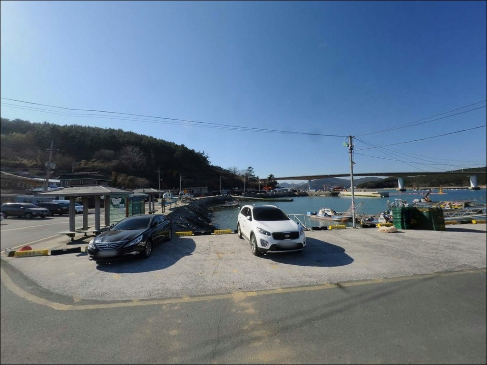
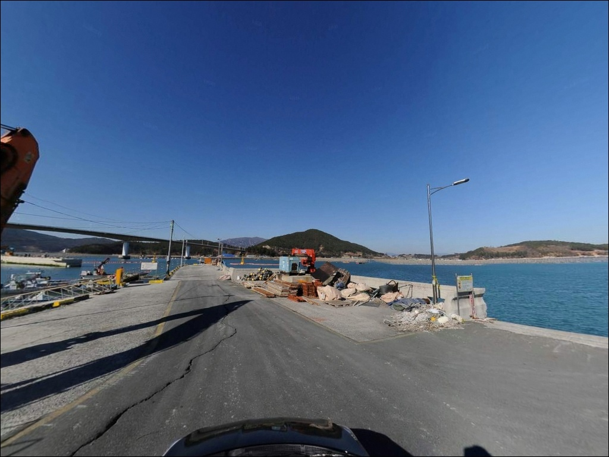
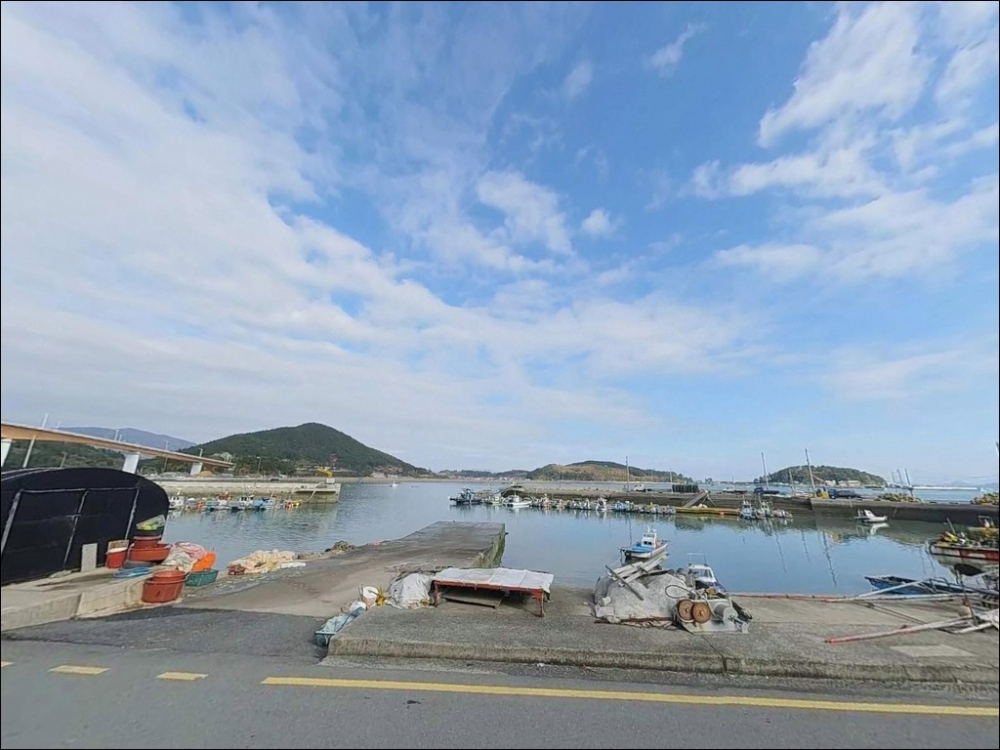
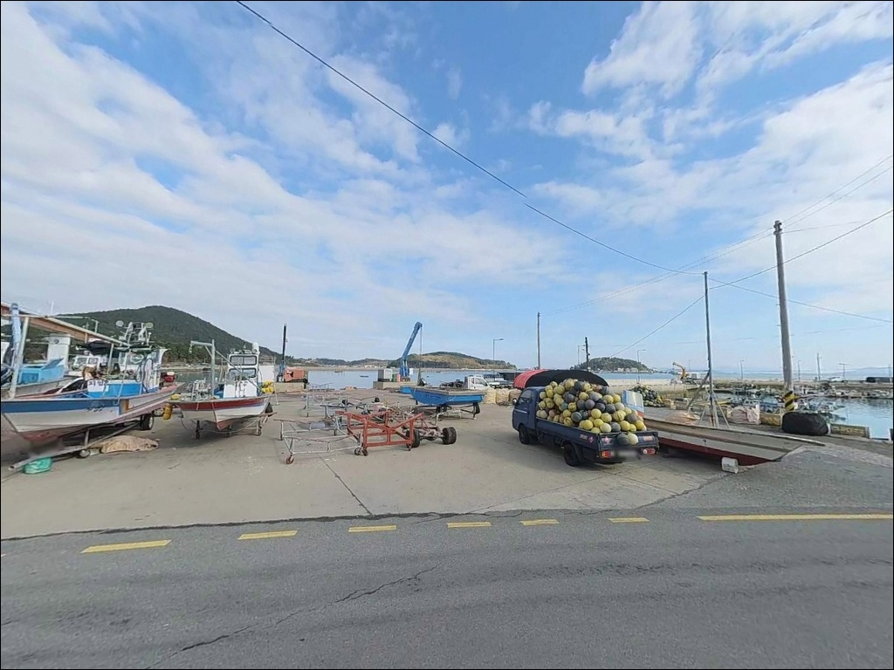
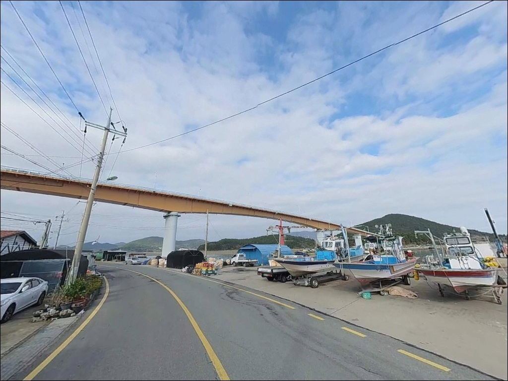
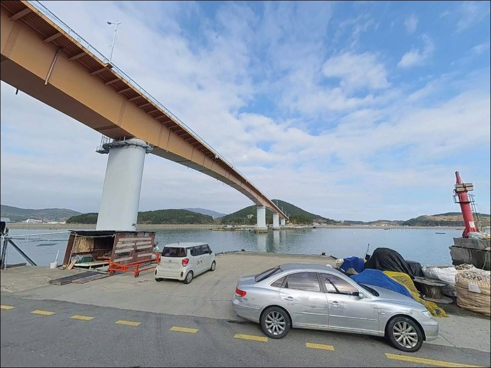
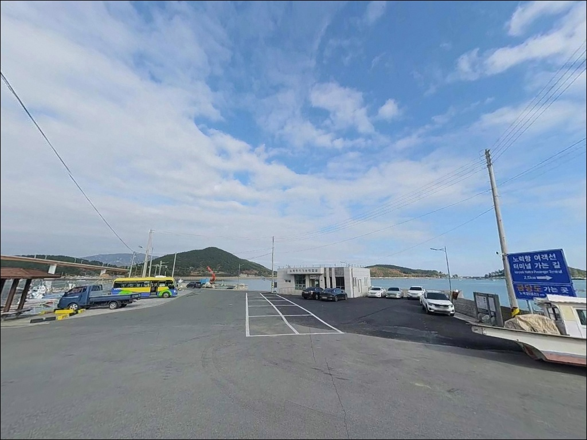

노력도선착장, 전남 장흥군 어종이 다양해서 즐거운 바닷가 차박 낚시 장소


포인트 안내
노력도선착장
전남 장흥군 회진면 덕산리 2038-31
득량만 조류를 타고 이동하는 감성돔과 갑오징어는
물때가 맞지 않으면 방파제 앞을 그냥 지나칩니다.
노력도선착장은 주차 여건이 압도적으로 좋고
진입도 어렵지 않은 포인트지만,
물때 계산을 빠뜨리면
조류가 멈춘 수면 앞에서
채비만 내리는 결과로 이어집니다.
전남 장흥군 회진면 덕산리,
회진대교를 건너 노력도 북쪽 해안에 자리한
이 선착장은 과거 제주행 여객선이 오가던
어항·여객 겸용 항만입니다.
방파제와 물양장이 총 800m 이상 규모로
조성되어 있어 도서 어항 가운데서도
진입이 쉽고 낚시 자리 선택의 폭이 넓은 편입니다.
이 글은
노력도선착장의 진입 동선, 차박 여건,
방파제 지형 기반 낚시 여건 분석,
낚시 스타일별 공략 조건에 집중합니다.
조황 단정이나 특정 어종 보장은
이 글의 범위에 포함되지 않습니다.

1. 진입 동선과 포인트 접근성
장흥 회진면 소재지에서 출발하면
회진대교를 건너 노력도로 진입하는 경로가
가장 직관적입니다.
섬 북쪽 해안을 따르는 노력도 1길이
선착장·항만까지 곧장 연결되며,
포장 상태가 양호하고
버스나 대형 차량도 드나드는 노선도로입니다.
회차는 선착장 주변 넓은 공간에서 여유 있게 가능합니다.
주차는 과거 여객터미널 주차장으로 사용되던
광장 전체를 활용할 수 있으며,
승용차 100대, 버스 30대 수용 규모로
어항 포인트 가운데 주차 여건이 특히 좋은 곳입니다.
선착장·방파제 시작부 주변에도 포장 공간이 이어져
장비 하차와 낚시 자리 이동 동선이 짧습니다.
대형 캠핑카나 루프탑 텐트 차량도
회진대교와 진입로에서 폭 제약 없이
선착장까지 진입할 수 있습니다.
초행이라도 내비게이션 목적지를
"노력항"으로 설정하면
주차장 입구까지 정확히 안내됩니다.

2. 차박 환경과 야간 체류 여건
노력도선착장의 차박 여건은
도서 어항 포인트 가운데 편의성이 높은 편입니다.
아스팔트와 콘크리트로 포장된 주차장 전 구간이
우천 시에도 배수가 원활하고
지면이 단단해 차량 설치에 유리합니다.
터미널 가로등 시설이 잔존해
야간에도 일정 조도가 유지됩니다.
반면 항만 시설이 있는 어항 특성상
완전히 고립된 프라이빗 차박지는 아닙니다.
민가와 항만 시설이 인접해 있어
야간 소음과 조명 관리가 필요하며,
어선 입출항이 이루어지는 이른 새벽에는
선착장 안쪽 공간은 주차를 비워두는
것이 기본 매너입니다.
외항이 노출된 구조라 계절과 기상에 따라
바람 영향을 받는 경우도 있습니다.
낚시를 마치고 하룻밤 머무는 용도로는
주차 공간과 화장실 여건이 갖춰진 만큼
실용적인 체류가 가능한 포인트입니다.


3. 주변 편의시설 및 인프라 현황
노력도선착장 자체에
터미널 건물 내 공중화장실이 설치되어 있습니다.
도서 소형 선착장과 달리
기본 위생 시설이 현장에 갖춰진 포인트로,
장시간 체류에 현실적인 조건을 제공합니다.
회진대교를 건너면 회진면 소재지까지
차량으로 5~10분 거리입니다.
회진항 일대에 편의점, 마트, 낚시점, 식당가가
밀집해 있어 소품 보충이나 식사 해결이 가능합니다.
낚시 전 얼음과 미끼는 회진면 낚시점을 이용하는 편이
현장 도착 직전에 해결하기 좋은 동선입니다.
반경 10km 안에는
정남진 해양낚시공원이 있습니다.
유료 시설이지만 안전 시설이 완비된 데크형 낚시터로,
부대시설을 우선하는 동반 낚시에
활용할 수 있는 대안입니다.

4. 진입 전 반드시 챙겨야 할 준비사항
방문 전 가장 먼저 확인할 것은 물때입니다.
득량만은 2017년 청정해역 갯벌 생태 산업 특구로 지정된 해역이며,
5년간 300만 미 감성돔 치어를 방류한 이력이 있어
자원량은 꾸준히 늘어나는 추세입니다.
그러나 조류가 멈춘 정조 시간대에는
어떤 채비를 써도 반응이 뚝 끊기는 구간이
생기는 해역이기도 합니다.
바다타임에서 노력도 기준 물때표를 확인하고
조류가 움직이는 타이밍에 맞춰 출발 시각을 조정하는 것이
이 포인트를 제대로 공략하는 출발점입니다.
섬 지역 특성상 기상 변화도 빠른 편이니
당일 아침 기상청 해상 날씨를 다시 한번 확인하는 것이
헛걸음을 막는 기본 조건입니다.
방파제 직벽은 높이가 상당한 구간이 있어
야간 이동 시 추락 위험이 있습니다.
구명조끼와 헤드랜턴은 필수이며,
암초 지형이나 갯바위로 이동할 계획이라면
미끄럼 방지 신발도 준비하는 편이 좋습니다.

5. 지형 기반 낚시 여건 분석
노력도선착장의 낚시 여건을 결정하는 구조는
방파제와 물양장입니다.
대형 여객선이 접안하던 이력이 있는 만큼
선착장 정면 기준 수심은 약 8~12m로 깊게 형성되며,
바닥 지형에 장애물이 적고
평탄한 구간이 넓어 채비 손실이 적은 편입니다.
방파제 외해 측으로 나가면
수심이 빠르게 깊어지는 구간이 형성되고,
회진대교 인근을 통과하는 조류 흐름이
선착장 외항 쪽으로 꾸준히 이어집니다.
선착장 우측으로는 석축 방파제가 연결되어 있어
벽면 공략과 갯바위 탐색을 병행할 수 있는
지형 구성입니다.
내항 쪽은 계류선과 방파제에 의해
파랑이 차단되어 비교적 잔잔한 수역이 형성됩니다.
생활낚시와 찌낚시에 적합한 구간이며,
양식장 인근 내만에서 감성돔이 모여드는
전형적인 득량만 내만 조건을 갖추고 있습니다.
최신 조황은 출조 전에 반드시 검색해 보시기 바랍니다.


6. 방파제 자리 선택이 달라지는 조건
이 포인트에서 가장 어울리는 낚시는 원투낚시입니다.
수심이 깊고 바닥이 평탄한 외항 구간에서
장타로 조류 라인을 공략하는 방식이
노력도선착장 지형과 맞는 접근입니다.
붕장어, 도다리, 보리멸 계열을 노리기 좋은 조건이며,
바닥 걸림이 적어 진입 부담이 낮습니다.
루어낚시는 야간 가로등 아래서
볼락과 우럭을 겨냥하는 방식이 유효합니다.
소형 지그헤드나 미노우를 활용해
선착장 구조물 주변을 천천히 탐색하는 것이
이 포인트에 맞는 운용입니다.
가을철에는 갑오징어 조과가 뚜렷한 해역이라
에깅 채비를 함께 챙겨가는 낚시인이 많습니다.
찌낚시는 석축 방파제 구간에서
벽면을 공략하는 방식이 이 지형에 적합합니다.
만조 전후 1~2시간이 유효 시간대이며,
밑밥 운용이 가능한 반유동채비를 기본으로
감성돔과 숭어를 기대해 볼 수 있습니다.
양식장 인접 내만 구조는 감성돔이 모여드는
전형적인 조건이기도 합니다.

7. 대안 포인트와 플랜 B 동선
노력도선착장이 여의치 않을 때
첫 번째 대안은 회진항 방파제입니다.
차로 약 10분 거리에 위치한 지방어항으로
테트라포드와 외항 구조가 확인되며,
감성돔·농어 낚시 전력이 있는 포인트입니다.
갯바위 접근도 가능해
노력도선착장과 방식을 달리해 공략할 수 있습니다.
두 번째 대안은
정남진 해양낚시공원입니다.
회진면 대리에 위치한 유료 데크형 낚시터로
2025년 9월 재개장했습니다.
매주 수요일~일요일 운영이며
월·화는 휴장합니다.
득량만 감성돔 포인트 가운데 안전 시설이
가장 잘 갖춰진 시설로 꼽힙니다.
조류 방향이나 바람에 따라
회진면 해안선 소형 선착장들을
번갈아 탐색하는 동선도 가능합니다.
관산읍·대덕읍 방향 소형 방파제들이
장흥군 남부 해안선을 따라 분포하며,
방문 전 검색으로 현황을 확인하면
빠르게 대안 포인트로 이동할 수 있습니다.

진입이 쉬운 포인트일수록
물때 준비가 결과를 가릅니다
원투낚시나 갑오징어 에깅을 즐기는 낚시인이라면
노력도선착장의 지형 조건은
충분히 매력적인 구조입니다.
방파제 외항 8~12m 수심과
조류 흐름이 살아 있는 라인,
그리고 넓은 주차장이 삼박자로 갖춰진 포인트입니다.
반면 물때 확인 없이 찾아가거나,
어선 동선을 막는 자리에 차를 세우면
현장에서 당황하는 상황을 만납니다.
물때 확인, 야간 구명조끼, 어선 동선 파악,
이 세 가지를 갖추고 가면
회진면 해역에서 기억에 남는 출조가 됩니다.
화장실과 넓은 주차 공간 덕분에
낚시 후 자리를 옮기지 않고
그대로 하룻밤 머무는 선택도 가능합니다.
득량만의 밤 조류를 품고 앉아
에깅 채비를 내리는 시간은,
준비한 만큼만 결과로 돌아오는
조용한 포인트입니다.